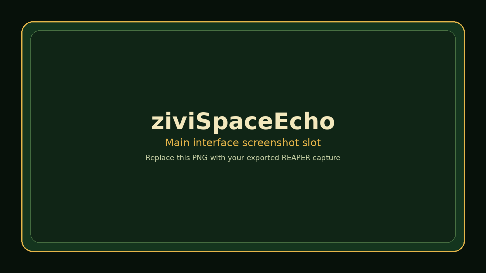
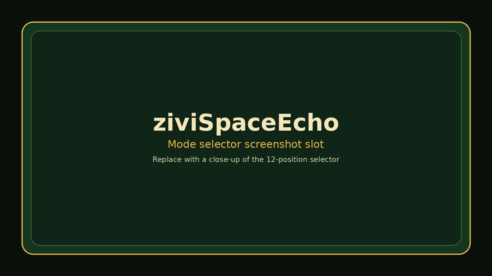
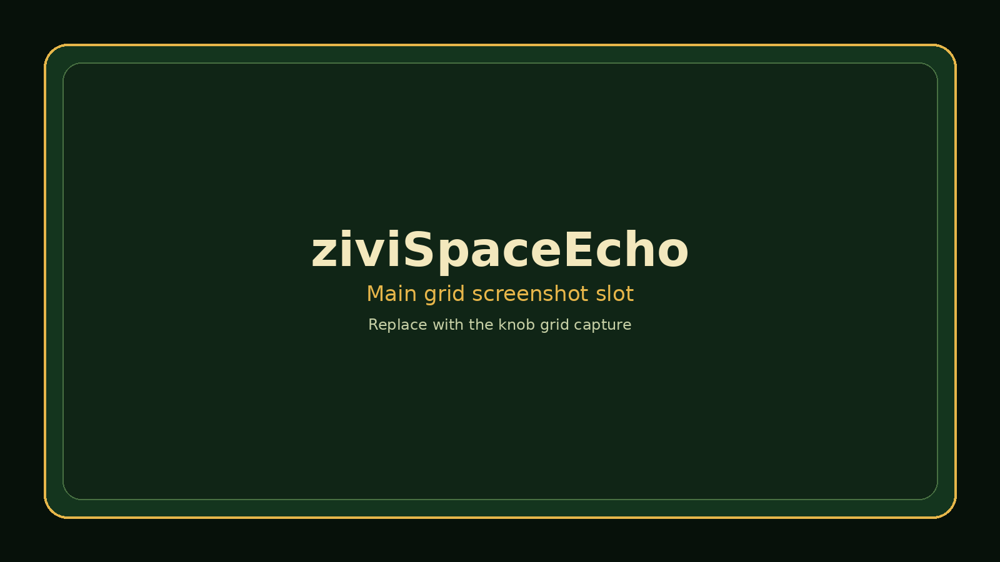
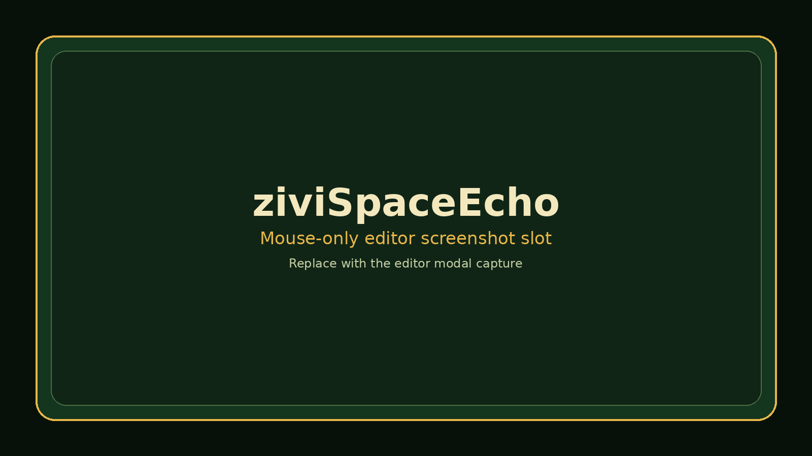

ziviSpaceEcho Complete Manual¶

1. Concept¶
ziviSpaceEcho is a musical tape echo and spring reverb instrument for REAPER.
It follows the workflow of a classic multi-head tape echo unit:
- audio enters a preamp / record stage;
- the signal is written to a virtual moving tape;
- multiple playback heads read the tape at different positions;
- selected heads are mixed according to the mode selector;
- repeats are shaped by tone, filtering, age, drive and feedback behavior;
- a spring reverb branch can run in parallel with the echo.
The goal is not strict component-level emulation. The goal is a playable, expressive and stable tape-delay instrument with the same kind of musical decision space: head selection, motor behavior, tape condition, echo intensity, spring ambience and hands-on cabinet-style control.
2. Interface regions¶
2.1 Header¶
The top header identifies the plugin and includes the UI mode button.
2.2 Mode / Routing¶
The left section contains:
- 12-position mode selector;
- active head/reverb indicators;
- timing mode selection;
- output and stereo mode controls.

2.3 Main parameter grid¶
The main grid contains the core continuous parameters:
- Echo / Mix
- Tape Tone
- Input Stage
- Motor / Wow-Flutter
- Filters
- Spring Tank
- Reverb Shape

2.4 Bottom control strip¶
The bottom strip contains discrete switches:
- Input
- Loop
- Tape Formula
- Tape Age
- LFO Wave
- Instrument Switch
- Echo Cancel
- Transport
It also displays dynamic timing information:
2.5 Mouse-only parameter editor¶
Click a numeric value below a knob to open the editor.

The editor includes:
- selected parameter name;
- current value;
- default;
- min and max;
- numeric keypad;
- decimal point;
- contextual sign toggle;
- DEL;
- CLR;
- DEFAULT;
- CANCEL;
- APPLY.
The editor intentionally avoids the hardware keyboard because REAPER may route keyboard shortcuts to the host rather than the JSFX window.
3. Timing modes¶
RE-201 Motor¶
Uses Repeat Rate as a motor-speed style parameter.
Best for:
- classic tape echo gestures;
- performance-style speed changes;
- non-grid rhythmic echoes.
Manual ms¶
Uses Manual Time as the leading head delay time.
Best for:
- precise delay design;
- sound design;
- matching a specific delay time.
Tempo Sync¶
Uses the selected sync division.
Best for:
- production work;
- locked rhythmic patterns;
- grid-based electronic music.
Tap Tempo¶
Uses tap tempo for performance input.
Best for:
- live playing;
- quickly following a piece without calculating BPM.
4. Mode selector¶
| Position | Label | Meaning |
|---|---|---|
| 1 | H1 | Head 1 only |
| 2 | H2 | Head 2 only |
| 3 | H3 | Head 3 only |
| 4 | H2 + H3 | Heads 2 and 3 |
| 5 | H1 + Rev | Head 1 plus reverb |
| 6 | H2 + Rev | Head 2 plus reverb |
| 7 | H3 + Rev | Head 3 plus reverb |
| 8 | H1 + H2 + Rev | Heads 1 and 2 plus reverb |
| 9 | H2 + H3 + Rev | Heads 2 and 3 plus reverb |
| 10 | H1 + H3 + Rev | Heads 1 and 3 plus reverb |
| 11 | H1 + H2 + H3 + Rev | All heads plus reverb |
| 12 | Reverb Only | Spring reverb only |
Position 12 uses a blue LED to visually separate reverb-only mode from amber echo positions.
5. Recommended starting levels¶
Intensity: 25–45%
Echo Volume: 35–55%
Reverb Volume: 15–35%
Drive: 5–20%
Noise: 0–12%
Condition: -10 to +20
Increase Intensity carefully when using longer times or multiple heads.
6. Mouse-only editing workflow¶
- Click the numeric value below a knob.
- The modal editor opens.
- Enter the target value using the on-screen keypad.
- Click
APPLY.
To reset:
- Click the numeric value.
- Click
DEFAULT.
To cancel:
- Click
CANCEL.
To correct entry:
DELremoves the last numeric input.CLRclears the entry.
7. UI mode¶
The plugin includes a UI mode parameter:
- Graphic Skin
- Native Controls
Use native controls if you need standard REAPER automation editing or a fallback UI.